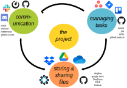

(digital)
Project management
Why project management?
Why How project management?
Challenges
Platform creep: Our attention becomes scattered across platforms, we loose track.
Accessibility: inviting collaborators from outside the own institution. Switching institutions.
Cost: Many freemium models but crucial features (often) cost money.
Long term stability: Will it still be there and accessible in 5, 10, 15 years?
Many digital tools
Challenges
Platform creep: Link platforms and centralise notifications.
Accessibility: Look out for free solutions or solutions that allow external members.
Cost: Convincing your institution to invest in a solution might pay off.
Long term stability: ?
Exercise [50 min]
Do one out of the following*:
(-) Set up a project management workflow using Slack, Trello and Google Drive (see instructions).
(-) Set up a project management workflow using Discord, Asana and Dropbox (see instructions).
(-) Set up a project management workflow entirely on Github (see instructions).
*Instructions can be found here: https://github.com/JanaLasser/digitalisation-in-research-module-2/tree/main/03_collaborations/03_03_project_management
Discussion
What did you like about the project management workflow you tried?
What was missing / annoying / didn't work at all?
Interventions


Heading
Heading
Heading
Heading
Slide title
Resultate: Genauigkeit
| Krankheit | F1 score | Sensitivität | Spezifizität |
|---|---|---|---|
| Stillbrunst | 0.731 | 0.635 | 0.989 |
| Lahmheit | 0.715 | 0.631 | 0.939 |
| Ketose | 0.701 | 0.678 | 0.975 |
| akute Mastitis | 0.416 | 0.277 | 0.992 |
| chron. Mastitis | 0.339 | 0.291 | 0.981 |
| Eierstockzysten | 0.482 | 0.433 | 0.961 |
| Milchfieber | 0.619 | 0.553 | 0.978 |
| Metritis | 0.611 | 0.496 | 0.994 |
https://pypi.org/project/scseirx
preprint:
bit.ly/school_covid_policy